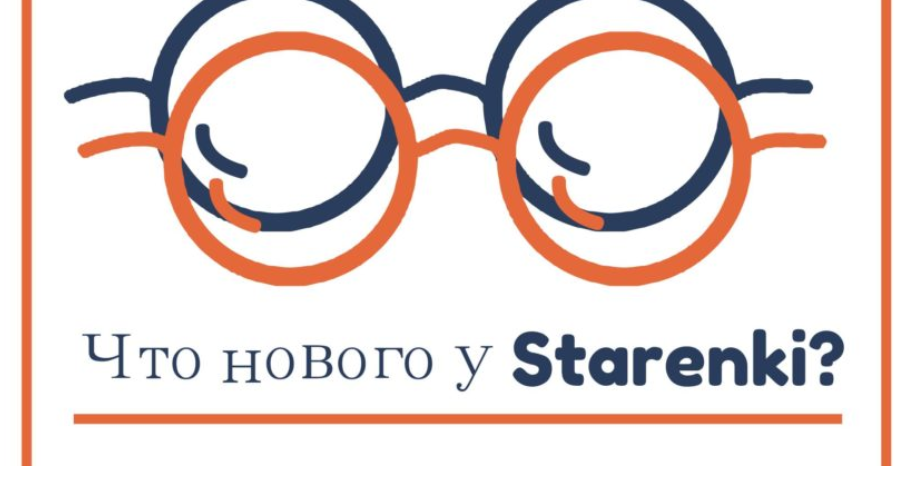

Наконец-то мы можем рассказать, чем важным ( помимо продуктовой развозки и стратегического планирования ) занималась наша команда последние три месяца.
По ряду объективных причин, социальный проект «Стареньки» стал автономным юридическим лицом.
В марте 2017 года был зарегистрирован благотворительный фонд «Старенькі».
Мы получили все необходимые документы, статус неприбыльности и перешли полностью на свое собственное обеспечение. Теперь мы тут http://starenki.com.ua/
Мы долго шли к этому решению, взвесив все «за» и «против», понимали, что нам необходимо сделать такой важный для развития шаг.
Этому предшествовал длительный и насыщенный путь. Команда проекта начала совместную волонтерскую деятельность в конце 2015 года. Изначально мы выбрали для себя стратегию прозрачности намерений, поэтому подписали официальный меморандум о сотрудничестве с МБФ Let’s Help — Давай Допоможемо, на субсчет которого поступали до марта 2017 года все собранные нами средства. То есть мы с первого дня не принимаем наличные пожертвования, а вся отчетность о приходах и расходах велась бухгалтером МБФ «Давай допоможемо». За этот год мы очень сильно выросли, сформировали комъюнити желающих поддерживать, отработали механизм помощи, нас узнают, у нас есть планы двигаться вперед, и мы понимаем, что инициатива «Старенькі» с нами теперь навсегда. По этой причине и множестве других, было принято решение зарегистрировать свой благотворительный фонд.
Начался путь социального проекта «Старенькі». Основные принципы, которые мы для себя определили в самом начале пути и продолжаем их придерживаться сейчас это:
Никаких наличных поступлений и расходов.
Полная прозрачность проекта.
Вся сумма пожертвований в 100% размере идет на закупку
продуктов и базовой бытовой химии нашим старичкам
(иногда в пакетах есть еще памперсы).
Мы ничего не зарабатываем и не представляем ни одну из
коммерческих организаций (или политических
объединений).
Наш проект — это социальная инициатива.
Мы никого не пиарим, но всегда искренне говорим
«спасибо» за помощь и участие.
Чтоб продолжать двигаться согласно нашим принципам, мы создали автономное юридическое лицо, получили статус неприбыльной организации и зарегистрировали счет в банке.
Теперь все пожертвования можно делать у нас на сайте http://starenki.com.ua/donatoram/podderzhat-proekt и любым удобным способом, но все также безнал.
Благодарность
Мы очень благодарны руководству МБФ «Давай допоможемо» и лично
Olga Bondarenko за их добрые сердца и веру в то, что необходимо поддерживать старичков. С их помощью и начался путь социального проекта «Старенькі».
Профессиональную юридическую помощь в подготовке учредительных документов и в ходе самого процесса государственной регистрации фонда нам оказали наши друзья Lavrynovych & Partners Law Firm и отдельное спасибо Olena Zubchenko.
С любовью, ваша #starenki_team